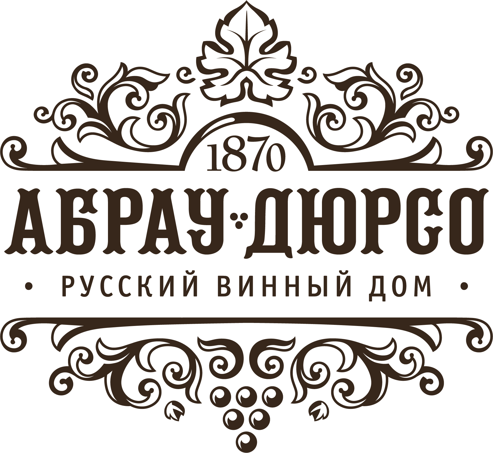

О компании РОСТОДАР
Качественное удобрение
Максимум урожайности
Создаем лучшее для Вас
О нас
История компании Ростодар началась с поиска новых путей интенсификации сельскохозяйственного производства в рамках собственного КФХ в Калужской области. Как любым фермерам, нам хотелось сократить расходы на химические удобрения, средства защиты растений, но при этом, как минимум, не потерять в урожайности. Мы начали изучать опыт применения гуминовых препаратов, историю их научного изучения и практического использования и приняли решение организовать собственное производство. Многолетний опыт специалистов в сфере аграрных и экологических технологий стал основой для создания компании Ростодар.
Технология производства
Мы взяли лучшее, что имеется на сегодняшний день в этой отрасли, усовершенствовали технологию, позволяющую извлечь максимум полезных веществ из низинного торфа, запатентовали ее, и, не смотря на сложности, связанные с пандемией, начали производство в 2020г. Первым опытным хозяйством, где было использовано новое органоминеральное удобрение Ростодар, стало наше собственное КФХ в Калужской области. Мы рискнули и результаты превзошли наши ожидания. Экономия средств на озимой ржи, ячмене на некоторых полях составила 56%. *( ссылка на раздел Информация – табл из презентеции). В течение 2021 года были проведены ряд научно-практических экспериментов совместно с ведущими аграрными лабораториями: - Испытательным центром почвенно-экологических исследований Российского государственного аграрного университета - МСХА имени К.А. Тимирязева - Кафедрой овощеводства МСХА имени К.А. Тимирязева, Калужским НИИСХ Мощность линии по производству нового органо- минерального удобрения Ростодар - до 7 тонн/сутки
Партнёры
ООО «Ростодар» сотрудничает с ведущими аграрными университетами и НИИ, а так же крупными производителями сельскохозяйственной продукции. Мы открыты для взаимовыгодного сотрудничества по продвижению и представлению продуктов серии Ростодар: органо-минерального удобрения, органической кормовой добавки Ростодар, органо-минерального удобрения на основе биотехнологической переработки куриного помета Фертилаг.
-
РГАУ - МСХА
имени К.А. Тимирязева -
Министерство сельского
хозяйства Калужской
области -
Калужский НИИ
сельского хозяйства -

Русский
винный дом -
Кубанский
государственный
аграрный университет